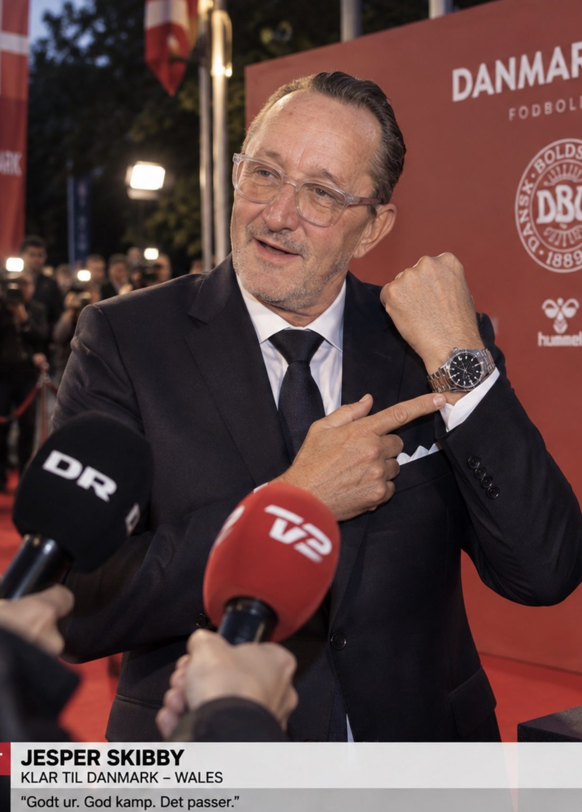

01
Historien
Nogle ryttere vinder løb. Andre vinder et helt land.
Jesper Skibby vandt etaper i Tour de France, Giro d’Italia og Vuelta a España: fem Grand Tour-sejre i 1989, 1991, 1993 og to gange i 1995. Han kørte sig ind i danskernes hjerter med angrebslyst og et smil, der aldrig gik af. Det er den ånd, uret er bygget på.
Skibby Watch er ikke merchandise. Det er et stykke cykelhistorie i et begrænset oplag, udviklet med Jesper selv. Når de 500 er væk, kommer første udgave ikke igen.
[Citat fra Jesper Skibby indsættes her]
— Jesper Skibby
